Thank you for purchasing the Wordpress Social Stream plugin!
If you have any questions that are beyond the scope of this help file, please feel free to send us an email using the contact form on our profile page. We are also available for hire if you require any customisations or assistance with Wordpress.

Setting Up The Plugin
Installation
Installing plugins in Wordpress is a quick and easy process:
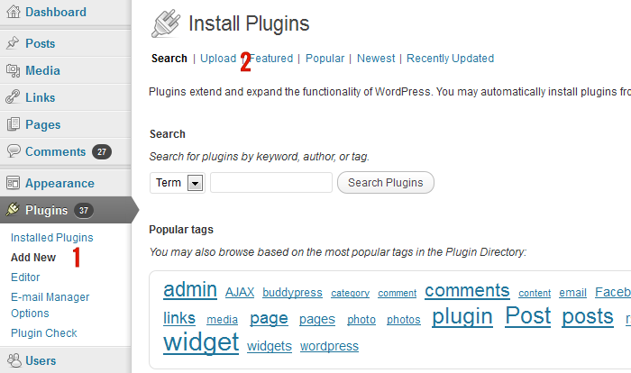1. In Wordpress admin go to Wordpress Admin->Plugins->Add New
2. Click the Upload link
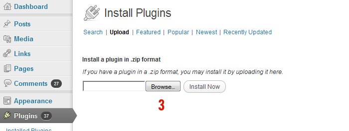3. Click the "Browse" button and select the plugin zip folder from your hard drive
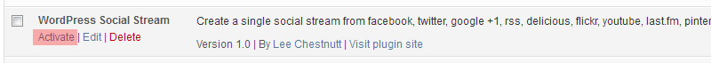4. Click the "Activate" link to complete the plugin installation
Plugin Settings
To access the Wordpress Social Stream plugin settings page go to Wordpress Admin->Settings->Social Stream.
Tab 1 - Social Streams
The first tab is split into 2 sections:
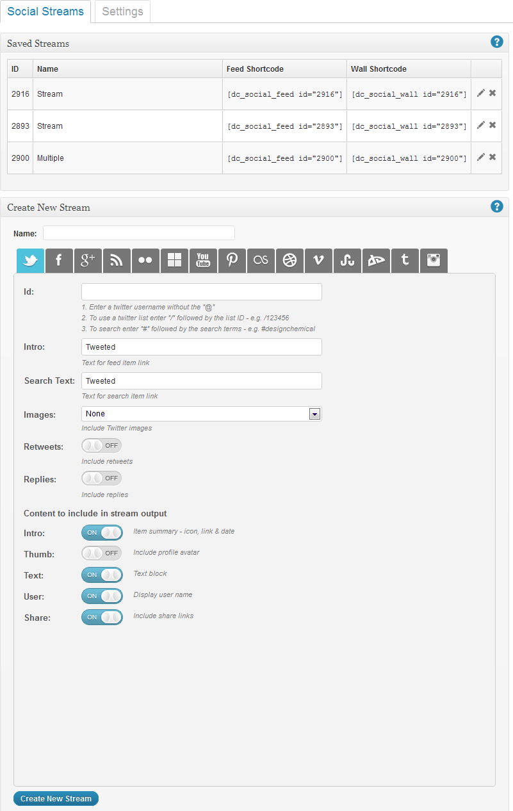
1. Saved Streams
This section lists all of your previously saved social network streams.
- Edit StreamClick the "edit" icon to display the stream settings in the lower box. Change the stream options and click the "Edit Stream" button to save the new settings.
- Delete Stream Click the "delete" icon to delete the social stream - this will remove the stream completely from the WordPress system.
- 2. Create New Stream/Edit Stream The second section is where the social streams are created/edited and contain all of the relevant social network details.
- Stream Name Enter a descriptive name for the social network stream - this is for reference only.
- Social Networks The social network tabs allow you to set up the networks that you want to include in the social stream. To add a social network enter at least one valid ID in the "ID" field. Separate mulitple ID's with a comma.
- Link Text - enter the text to be used to link the feed item. For multiple feeds separate the link text for each feed with a comma.
- Content to include in stream output Select the content blocks that you want to include in each feed item - the type of content blocks available may vary between social networks.
- Data feed to be shown Social networks that have multiple feeds available will have each feed listed in the network tab. Select the feeds to be included using the "on/off" switch.
Note: Save the stream settings by clicking the "edit stream" or "create new stream" buttons when complete.
Tab 2 - Settings
The settings section allows you to configure the default features for displaying the social streams. Settings can be changed for individual social streams using the shortcodes:
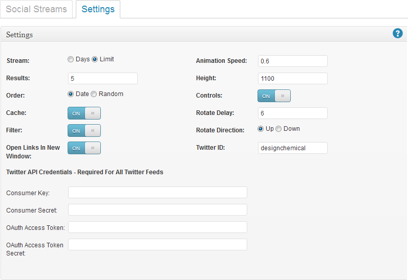
- Stream: Select whether to create the stream based on the total number of days (select "days") or number of items per feed (select "limit").
- Results:The maximum number of results to display based on the stream type above - e.g. 10 results per feed or 10 days.
- Order:Select whether to order by date or randomly.
- Filter:When set to "on" a navigation bar of all active network icons will appear either at the bottom of the rotating feed list or above the social network wall. Clicking on these icons will allow the user to filter the stream.
- Controls:When set to "on" a control bar will appear at the bottom of each tab when the user hovers over the content. The control navigation allows the user to stop/start the rotating feed or go to next/previous entry.
- Open Links In New Window:Select "on" to open all links in a new browser window
- Cache:Select "on" to enable browser caching of feed - reduces up download time
- Animation Speed:The speed (in seconds) for the rotating animation.
- Height:Only applies to the rotating feed display - The height of the widget in pixels
- Rotate Delay:Enter the number of seconds between each feed item. To disable the rotating feed option set the delay to zero.
- Rotate Direction:Sets the rotating feed direction to either "up" or "down"
- Twitter ID:Enter the twitter username to use in twitter share links - will appear at the end of tweets as "via @username".
- Twitter API Credentials:All Twitter feeds require authentication. See FAQ -> Twitter API Credentials for more details.
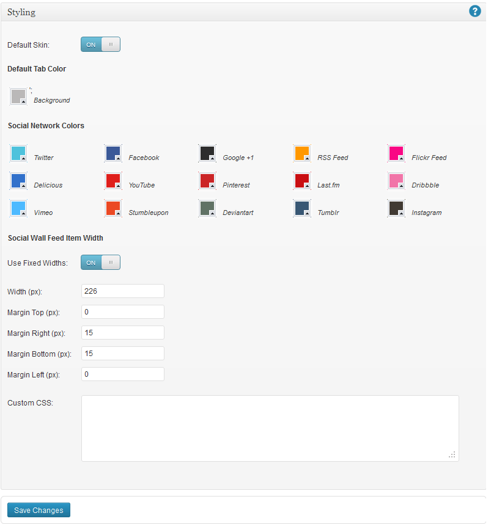
- Default Skin Switch the default skin option to "Off" to stop the loading of the default CSS file.
- Default Tab Color To change the default background color of the social network wall filter tabs click on the colored box - a colorpicker should now appear. Select the new color and then click elsewhere on the screen to close the colorpicker widget. The colored box should now be updated using the new color.
- Social Network Colors These show the background colors used for the individual social networks. To change one of the network colors click on the relevant colored box - a colorpicker should now appear. Select the new color and then click elsewhere on the screen to close the colorpicker widget. The colored box should now be updated using the new color.
- Social Wall Feed Item Width The default styling for the social network wall uses % widths for the feed items. To change this to fixed widths set the "Use Fixed Widths" switch to "on" and enter the preferred width and margins (in pixels) for your wall feed items. Turn "off" to revert back to the default % widths.
- Custom CSS Custom CSS for styling the social media tabs can be entered into the text field. Any CSS rules included in this text area will automatically be inserted into the page.
Social Network Feed ID's
The plugin includes extensive social network ID options, which are entered into the "Id" field in the stream settings. Inline help is given in the settings page for each social network regarding how to enter each Id.
Below is a summary of the Id options available for each network:
Twitter Options
| Options |
|---|
Twitter has 3 different feed options:
|
Facebook Page
| Options |
|---|
Facebook has 2 different ID options:
|
Google +1 Options
| Options |
|---|
Google + has 1 ID option:
|
Youtube Options
| Options |
|---|
Youtube has 2 different ID options:
Note: The maximum limit for each youtube feed is 50 - if the limit option is set higher than 50 the plugin will automatically use 50 for youtube feeds. |
Flickr Options
| Options |
|---|
Flickr has 2 different ID options:
|
Delicious Options
| Options |
|---|
Delicious 1 ID option:
|
Pinterest Options
| Options |
|---|
Pinterest has 2 different ID options:
|
RSS Feed Options
| Options |
|---|
RSS Feeds have 1 ID option:
|
Last.fm Options
| Options |
|---|
Last.fm has 1 ID option:
|
Dribbble Options
| Options |
|---|
Dribbble has 1 ID option:
|
Vimeo Options
| Options |
|---|
Vimeo has 1 ID option:
|
Stumbleupon
| Options |
|---|
Stumbleupon has 1 ID option:
|
Deviantart
| Options |
|---|
Deviantart has 1 ID option:
|
Tumblr
| Options |
|---|
Tumblr has 1 ID option:
|
Instagram - REQUIRES CLIENT ID AND ACCESS TOKEN
| Options |
|---|
|
Instagram can hande 4 different types of network feed ID - search, tags, user ID and a location ID:
As with all networks multiple feeds can be entered by separating each feed ID with a comma: |
What Is A Social Stream?
The plugin creates a social stream, which is a single stream of items and updates created from all of your individual social network profiles, data feeds and APIs.
The social stream combines each different network and orders them by date, giving you a single, standardised feed showing your social interactions over time. This gives you more opportunities to present all of this information in more useful and interesting ways.
Displaying your social stream
The plugin includes 2 different features for you to display your social stream on your website - a rotating feed list plus the social network wall - more information provided on each feature in the following sections & demo pages.
Inline Help
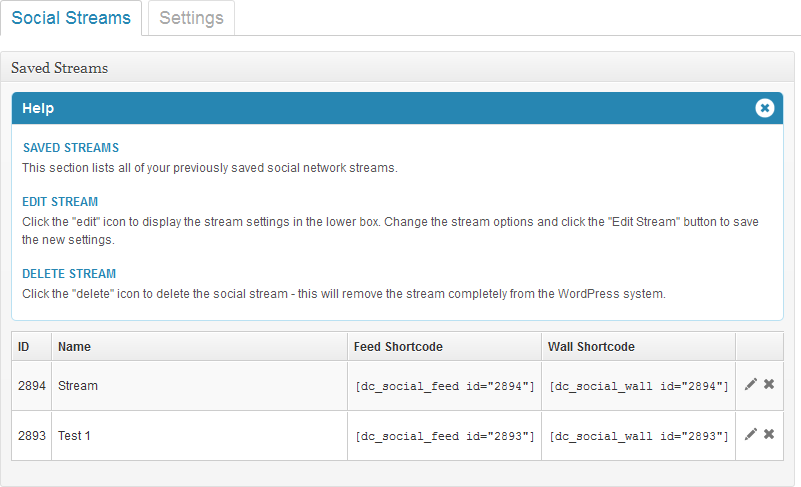
Clicking on any of the help icons will display a drop-down section with more information on the settings.
Display The Social Stream
Quickstart
Display a Social Network Wall With Default Settings
One available display option built-into the plugin is to present the feed items as a "Network Wall". This wall uses jQuery isotope to create the layout and includes an animated filter feature.
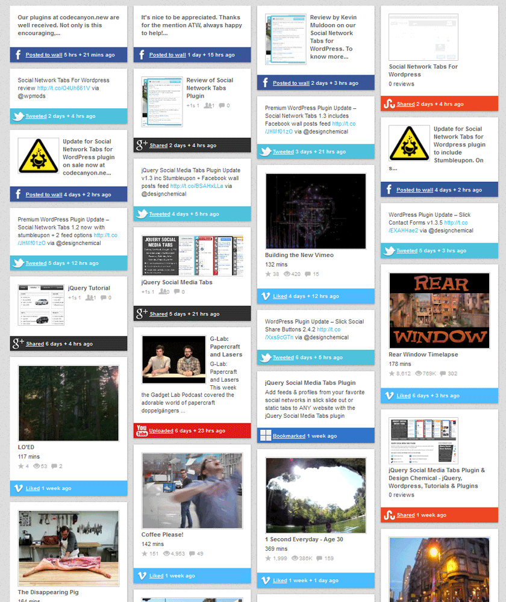
The network wall can be easily added to any WordPress page using the following shortcode:
[dc_social_wall id="XXX"]
The ID for the social stream can be found from the list of saved streams in the plugin settings page.
Display a Rotating Feed List With Default Settings
The rotating feed list creates a list of feed items, which continuously loop in a widget style container. The plugin has 2 built-in skins, which can be used:
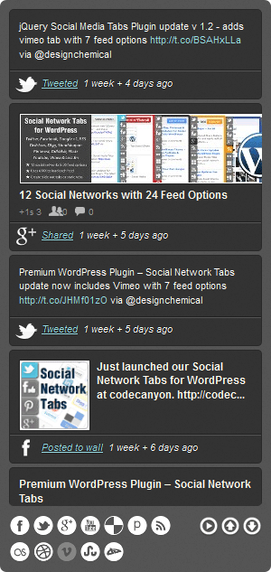 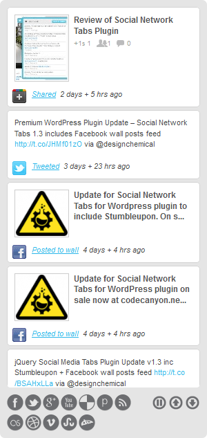
To create a rotating social feed list with the default settings (as per plugin settings page in admin) and with the built-in "light" skin use the following shortcode:
[dc_social_feed id="XXX"]
To switch to the dark sample skin:
[dc_social_feed id="XXX" style="dark"]
Creating a Customised Social Network Wall
Number of Columns
The wall layout is responsive and will therefore adjust according to the width of the parent element. Use the "cols" parameter to adjust whether to display 1, 2, 3, 4 or 5 columns (default = 4 columns).
Example - create a 3 column wall layout:
[dc_social_wall id="XXX" cols="3"]
Changing Default Settings
The wall will automatically use the default settings according to the "plugin settings page in WordPress admin. To change these settings include the relevant parameter in the shortcode:
| Option | Default | Alternatives | Description |
|---|---|---|---|
| results: | 30, | Number of results per network feed | |
| max: | 'days', | days, limit | Set whether to create the feed based on maximum days or number of results per network' |
| order: | 'date', | 'date', 'random' | Option to display wall items by date or randomly |
| filter: | true, | true, false | Set to true to include a filter navigation allowing the user to filter specific social networks' |
| cache: | true, | true, false | Set to true to cache AJAX response, set to false to force response not to be cached by the browser' |
Example Shortcode
To create a 3 column social network wall randomly displaying the last 20 items for each feed:
[dc_social_wall id="XXX" cols="3" max="limit" limit="20" order="random"]
Creating a Customised Feed List
Using a Custom Skin
To use your own CSS styles for the feed widget just include the CSS class name using the "style" parameter:
Example - create a feed list with the class name "custom-class":
[dc_social_feed id="XXX" style="custom-class"]
Changing Default Settings
The feed list will automatically use the default settings according to the "plugin settings page in WordPress admin. To change these settings include the relevant parameter in the shortcode:
| Option | Default | Alternatives | Description |
|---|---|---|---|
| controls: | true, | true, false | Option to include navigation controls |
| rotate_delay: | 8, | Number of seconds delay for rotation | |
| rotate_direction: | 'up', | 'up', 'down' | Direction of rotation |
| speed: | 0.6, | Speed of ticker animation in seconds | |
| results: | 30, | Number of results per network feed | |
| max: | 'days', | days, limit | Set whether to create the feed based on maximum days or number of results per network' |
| order: | 'date', | 'date', 'random' | Option to display feed items by date or randomly |
| filter: | true, | true, false | Set to true to include a filter navigation allowing the user to filter specific social networks' |
| cache: | true, | true, false | Set to true to cache AJAX response, set to false to force response not to be cached by the browser' |
Example Shortcode
To create a rotating feed list using the "dark" skin with a delay of 8 seconds, direction = down and controls disabled:
[dc_social_feed id="XXX" style="dark" rotate_delay="8" rotate_direction="down" controls="false"]
Shortcodes
Using Shortcodes In Template Files
To use WordPress shortcodes outside of the post/page content, directly in a template file, you need to use additional code to call the shortcode function:
<?php echo do_shortcode('[dc_social_wall id="111"]'); ?>
Customisation
Styling & CSS
If you do want to create a custom style for your social streams you can use a copy of the default css file, which is held in the same folder as this help file - see sample.css.
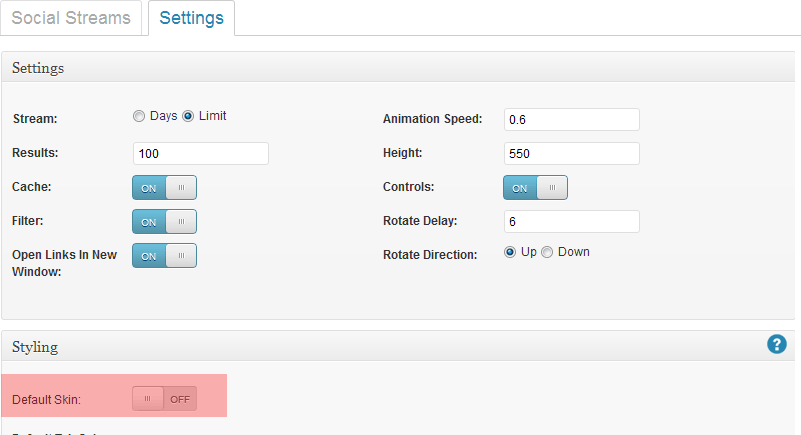
In the plugin settings page disable the "default skin" option to prevent the plugin from loading the original CSS - Wordpress Admin->Settings->Social Stream->Settings->Styling
Note - remember to always add any customised style sheets to your THEME FOLDER and NOT the plugin folder. Wordpress automatically deletes and updates ALL plugin files whenever an upgrade is issued.
Creating a Responsive Network Wall
The default styling for the feed items for the social network wall uses % widths.
To change this to fixed width so that in responsive theme layouts the number of columns in your wall will adjust based on the browser width (see demo - Full Page Responsive Network Wall) set the "Use Fixed Widths" switch to "on" in the plugin admin "Styling" section:
Wordpress Admin -> Settings -> Social Stream -> Settings -> Styling
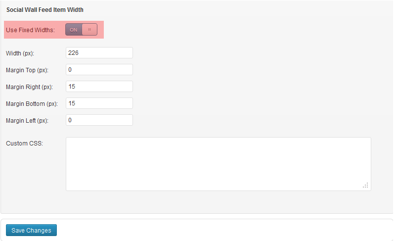
Enter your preferred width and margins into the text fields below the switch:
e.g The Full Page Responsive Network Wall demo uses the settings shown in the screenshot above - 226 width and margins of 0, 15, 15 & 0.
To disable fixed widths and use the default % widths change the "Use Fixed Widths" switch to "off".
Sources
Plugin Design & Development
- Design & Development: Design Chemical
Scripts
Front-End
Admin
- jQuery ColorPicker: [Source]
Twitter Authentication
- PHP Library to support OAuth for Twitter's REST API: Abraham Williams
- PHP OAuthToken Class
FAQ / Errors
Twitter API Credentials
Twitter API
Starting with version 1.7 of the plugin the Twitter API now requires authentication.
To create your own Twitter API credentials
- Browse to https://dev.twitter.com/ & login with your Twitter username
- Browse to https://dev.twitter.com/apps/new
- Complete name, description & website fields
- Check the "Yes I agree" box for the Developer Rules of the Road
- Enter the captcha & click "Create Your Twitter Application"
- Click "Create My Access Token"
- A success message will be displayed at the top of the page
- Click the "Details" tab to refresh the page and display your access token
- From your twitter application page copy the Consumer Key, Consumer Secret, Access Token and Access Token Secret values and enter into the twitter API details in the plugin's "Settings" tab.
The plugin should now be able to access your Twitter feed.
Note that the above values are for demonstration only and will NOT work with your plugin.
Creating Your Own Google API Key
The google +1 feed requires an API key. Fortunately creating your own google API key is fairly quick and easy:
- Go to https://code.google.com/apis/console#access
- Login to your google account
- Click "Create Project"
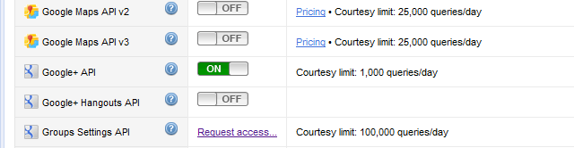
- Under service list, click the "off" button next to "Google+ API" to turn it on.
- Accept both agreements.
- From the left menu, Go to "API Access"
- Copy your API key and paste into the social stream settings
Instagram Feed Options
There are 4 different types of feed that can be included from Instagram:
1. User Feed
The user feed will show the latest posts from a specific user ID. To create a user feed use "!" followed by the user ID - e.g.
id: '!123456'
2. Location Feed
To display the latest posts for a specific location enter a "@" followed by the instagram location ID - e.g.
id: '@123456'
3. Search Based On Tags
To display the latest posts for a specific tag enter a "#" followed by the tag text - e.g. to search for images tagged with "london"
id: '#london'
4. Search Based On Geographical Location
To display the latest posts for a geographical location you need 3 parameters - latitude, longitude and distance(in meters up to 5000m). Enter these values starting with a "?" followed by the lat, long and distance separated by a "/" e.g.
id: '?55.123/-1.345/1000'
Using Multiple Feeds
As with all of the other networks you can add multiple instagram feeds of any type by separating each ID with a comma - e.g.
id: '!123456,@123456,?55.123/-1.345/1000,#london,#newyork'
Displaying Comments & Likes
The instagram feed also includes the option to display the latest comments for each post plus thumbnails of users who liked the post.
To add either comments or likes enter the number that you wish to display in the "comments" and "likes" text fields.
Creating Your Own Instagram API Client ID & Access Token
In order to use the Instagram feed you must first create your own "Client ID"
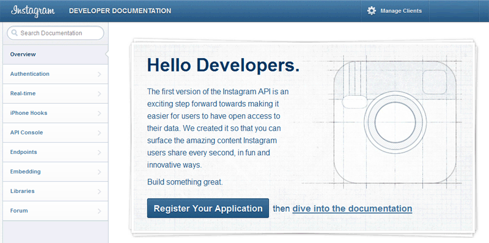
- Go to http://instagr.am/developer/.
- Click "Register Your Application"
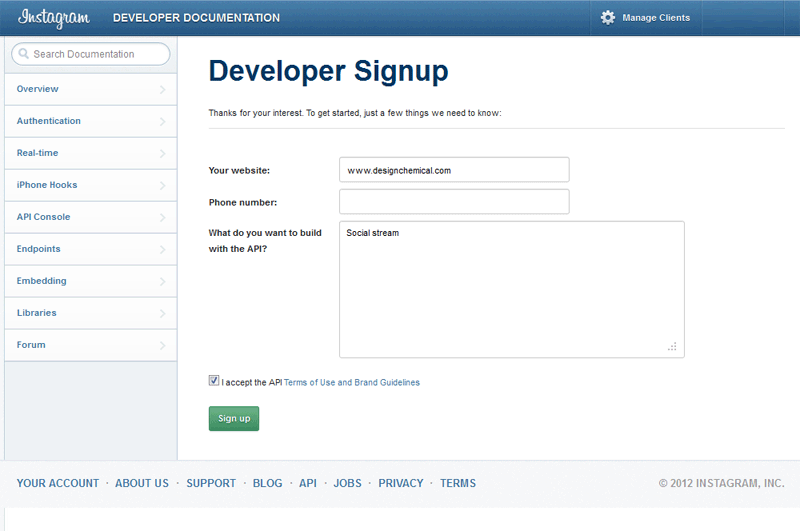
- On the Developer signup page complete the form
- Read and accept the terms & conditions and then click "sign up"
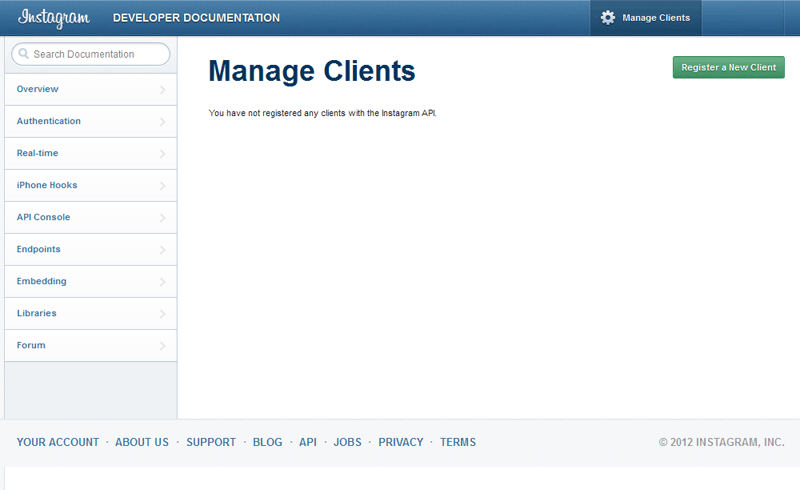
- If the signup page is submitted successfully and has been accepted click the "manage clients" tab in the top-right of the header.
- Click the green button - "Register A New Client.
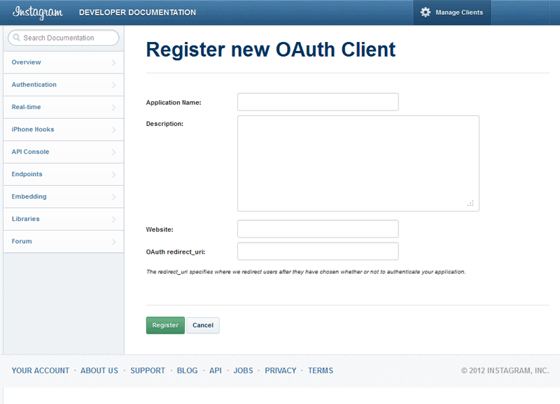
- Complete the "Register new OAuth Client" form - e.g:
Application name: social stream
Description: create a social stream from multiple networks
Website: enter your website URL - e.g. http://www.designchemical.com OAuth redirect_uri: enter the URL of a page where the social stream is installed - this is required to get your access token, which you can then insert into the instagram options. Once you have the access token you can use this on all pages, which use the social stream plugin on the website listed above. - Click the "Register" button

- Copy your CLIENT ID and paste into the "clientId" option for Instagram
- Enter your redirect_uri into the "redirectUrl" option for Instagram
How to get your access token
- Browse to the page on your website used for the "redirect_uri" in the Instagram client ID setup (note this page must have the social stream installed - using either the network wall or the rotating feed).
- You will then be redirected to the Instagram login screen (if not already logged in) and then a confirmation screen where you approve your app's access to your Instagram data.
- Instagram will then automatically redirect you back to your website page given in the "redirect_uri" setting
- When the page loads check the URL in the browser - you should see the following URL format:
http://your-redirect-uri#access_token=186786085.f59def8.1d34b28a52e04d36ba1dc52ca98215dc - Copy the token code after the "http://your-redirect-uri#access_token=" - e.g 186786085.f59def8.1d34b28a52e04d36ba1dc52ca98215dc
- Add the access token to your Instagram options using the "accessToken" option - you should now have your "accessToken", "redirectUrl" & "clientId" options completed
How To Get Your Facebook ID
For the facebook like box the ID of your facebook page must be used - this should be a numerical value, not the actual name of your facebook page - e.g. 157969574262873
To get the ID from your username you can use the following tool from facebook - replace "username" with the name of your facebook page profile:
How To Get Your Facebook Gallery ID
To get your facebook gallery ID browse to your facebook gallery page - e.g:
http://www.facebook.com/media/set/?set=a.110070145819348.18558.110041542488875&type=3
The ID for the gallery is the first set of numbers - in the example above this would be - 110070145819348
http://www.facebook.com/media/set/?set=a.110070145819348.18558.110041542488875&type=3
How To Get Your Google +1 ID
To get your google profile ID for the google +1 tab go to your google accounts page and click on the “edit profile” link.
Check the URL in the browser address bar – your profile ID is the number in the middle of the URL:
https://profiles.google.com/100058553707375301897/about/
How To Get Your Instagram User ID
To get your instagram user ID first get your access token - see section above "Plugin Options -> Creating Your Own Instagram API Client ID & Access Token".
Browse to the following URL - changing YOUR USER NAME & YOUR ACCESS TOKEN for your values:
https://api.instagram.com/v1/users/search?q=YOUR USER NAME&access_token=YOUR ACCESS TOKEN
The Instagram API should then load a page containing text with your profile details similar to the format shown below:
{"meta":{"code":200},"data":[{"username":"YOUR USER NAME","bio":"","website":"","profile_picture":"","full_name":"","id":"YOUR USER ID"}]}
Search for the "id" parameter usually located at the end of the text.
No Social Stream Is Created
This problem is usually caused by either a javascript error elsewhere on the page or the required jQuery files have not been loaded. Check your page using Firebug for more details on any javascript errors.
The Shortcode Appears As Text In The Sidebar Widget
If you are seeing the shortcode text appearing in the sidebar widget instead of the social stream then your theme is not set up to process shortcodes in text widgets. In order to add this feature see the following tutorial:
The Social Stream Is Working But One or More Networks Do Not Appear
Check the date of the last post from the social network that is missing and make sure that your settings for "Stream" & "Results" are set correctly in order to include older posts.
In order to ensure that all social networks are included set the "Stream" option to "limit" - this will now include a fixed number of posts per feed as opposed to X number of days.
Note: the default setting for the plugin shows the last 5 days of posts.
Twitter Feed Not Showing
If your twitter feed is not displaying make sure that you have set up your Twitter API Credentials.
If the twitter feeds are not showing and your Twitter API credentials are vallid this may be due to the limits imposed by Twitter on their API:
Searches - 180 calls per 15 mins.
Lists - 180 calls per 15 mins.
Users - 180 calls per 15 mins.
During this time other users will still be able to view your twitter feeds as limits are on a per user and per application basis.
Facebook Feed Not Showing
There are 3 main reasons your facebook feed may not work:
1. Your facebook page ID is incorrect.
2. You are trying to use a facebook profile instead of a page.
For more information on how to create a facebook page see - http://blog.hubspot.com/blog/tabid/6307/bid/5492/How-to-Create-a-Facebook-Business-Page-in-5-Simple-Steps-With-Video.aspx
3. Your facebook settings restrict the age of the user that may view your page or you have profanity filters set - in order for the facebook feed to work you must remove any age/profanity restrictions from your fan page.
How To Show Tweet Searches From Specific Usernames
You can use the twitter search function to show searches from specific usernames using the following format -
e.g. to search tweets containing "jquery" from user "designchemical"
#jquery+from:designchemical
How To Remove Specific Posts From Streams
Below the network tabs for each social stream there is a field called "Remove Posts".
To remove specific posts from a social stream enter the URLs of each post into this field - separate each URL with a comma
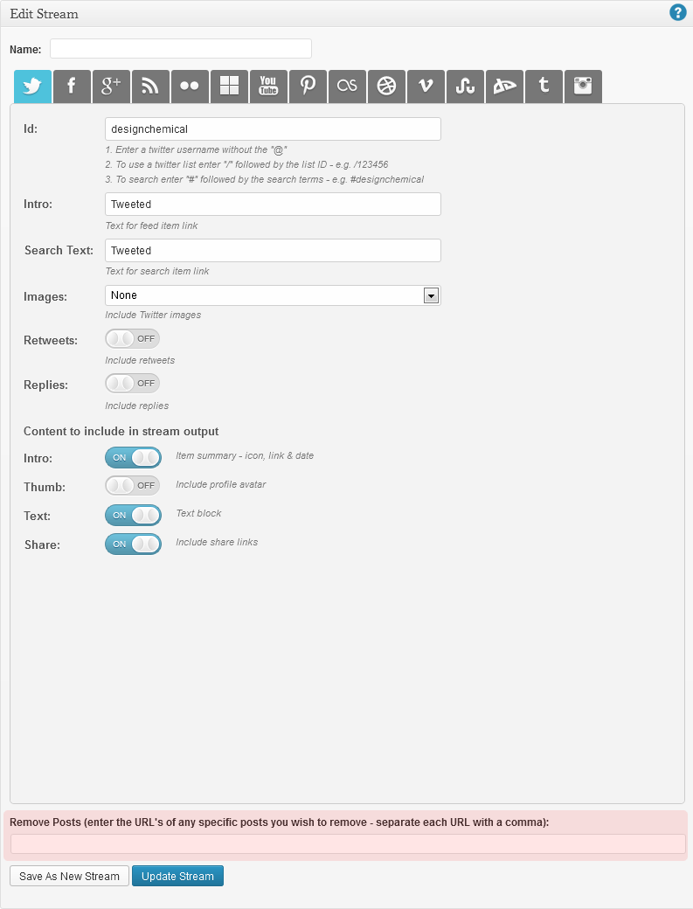Advanced Customisation - Using The Plugin With A Lightbox
Although the plugin does not include a lightbox, these can be included either separately as a plugin or integrated via your theme to enhance the social stream. An example of using a lightbox with the stream to show inline youtube and vimeo videos can be found on our demo website - Adding a jQuery Lightbox.
In the demo example we have used the jQuery prettyPhoto lightbox. Below is an example of the additional code added to open the videos in the ligthbox popup:
jQuery(window).load(function(){
jQuery(".dcsns-youtube .section-thumb a, .dcsns-vimeo .section-thumb a").prettyPhoto({
autoplay_slideshow: false, overlay_gallery: false, social_tools:false, deeplinking: false, theme:'pp_default', show_title: false});
});
The actual code required would depend on which lightbox you wish to use and usually can be found in the lightbox documentation.
The only key requirement is that the jQuery code is initialised using the jQuery(window).load(function() as the feed must be fully loaded before the lightbox is added.
Each social network feed item has its own css class, which allows you to target specific feed - e.g. dcsns-youtube for youtube feeds, dcsns-vimeo for vimeo feeds, etc.
Lightbox Code If Using Fancybox
If you are using the jQuery Fancybox lightbox plugin you can use the following code for youtube videos:
jQuery(window).load(function(){
jQuery(".dcsns-youtube .section-thumb a").click(function() {
jQuery.fancybox({
'padding' : 0,
'autoScale' : false,
'transitionIn' : 'none',
'transitionOut' : 'none',
'title' : this.title,
'width' : 680,
'height' : 495,
'href' : this.href.replace(new RegExp("watch\\?v=", "i"), 'v/'),
'type' : 'swf',
'swf' : {
'wmode' : 'transparent',
'allowfullscreen' : 'true'
}
});
return false;
});
});
Changelog
Changelog
v1.5.4 09/08/2013 (Current Version)
- Added: Option to remove specific posts from social streams
- Updated: jquery.social.stream.1.5.4.js
v1.5.3 03/08/2013
- Updated: jquery.social.stream.1.5.3.js
v1.5.2 07/05/2013
- Updated: URL for facebook album API
- Updated: jquery.social.stream.1.5.2.js
v1.5.1 12/03/2013
- Updated: jquery.social.stream.1.5.1.js
- Updated: https for google feed API
- Updated: delicious post link
- Updated: clean facebook links
v1.5 27/02/2013
- Added: Share feed items via google + & linkedIn
- Added: Set fixed widths via admin page
- Added: Option to change Youtube image size
- Added: Flickr title
- Updated: Twitter API v 1.1
- Updated: jQuery Social Stream v1.5
- Updated: Change limit value when max = days
v1.4.3.1 18/11/2012
- Updated: Use jquery.social.stream.1.4.3.min.js
- Updated: Added check for Instagram caption text
- Updated: Add max limit of 100 to google + feeds
- Updated: Facebook album date in Safari
v1.4.3 16/11/2012
- Added: Show feeds from pinterest boards
- Added: Show feeds from facebook galleries including latest comments
- Added: Show feeds from youtube playlists
- Added: share feed items via facebook
- Added: share feed items via twitter
- Added: Retweet link on twitter posts
- Added: Reply link on twitter posts
- Added: Favorite link on twitter posts
- Added: Option to show twitter images
- Added: Option to show twitter retweets & replies
- Updated: No access token required for Instagram tag searches
- Updated: Add count parameter to Instagram URL
- Updated: Change item selector for isotope
- Updated: Facebook relative links
- Updated: Added check for Instagram caption text
- Updated: Add max limit of 50 to youtube feeds
- Updated: Add max limit of 100 to google + feeds
- Fixed: Allow same rotating feed and social wall ID on same page
v1.4.1 31/08/2012
- Fixed: Rotating feed date order in Safari
v1.4 24/08/2012
- Added: Instagram
v1.3.1 16/08/2012
- Added: Flickr groups
- Added: User name option for facebook
- Updated: Twitter display date for Safari
- Updated: Time since function
- Updated: Trim user IDs & intro text
- Updated: Facebook icon link for wall feed items
- Updated: Facebook feed content link URLs
- Fixed: Rotating feed filter when displayed with network wall
v1.3 04/06/2012
- Added: Show feed from twitter lists & searches
- Added: Show feed from youtube searches
- Added: Option to show random order
- Added: Option to show twitter profile avatar in feed item
- Updated: Facebook & RSS feeds – option to show complete post text
- Updated: Feed URL for last.fm loved tracks
- Fixed: Facebook profile link
v1.2 25/4/2012
- Added: Tumblr social network feed
- Updated: facebook feed
- Updated: RSS feed
v1.0 20/4/2012
- First release
Thank You
Once again, thank you for purchasing the WordPress Social Stream plugin!
If you have any questions relating to this plugin or suggestions for future improvements please contact us via our Code Canyon profile or via our website - http://www.designchemical.com/blog/